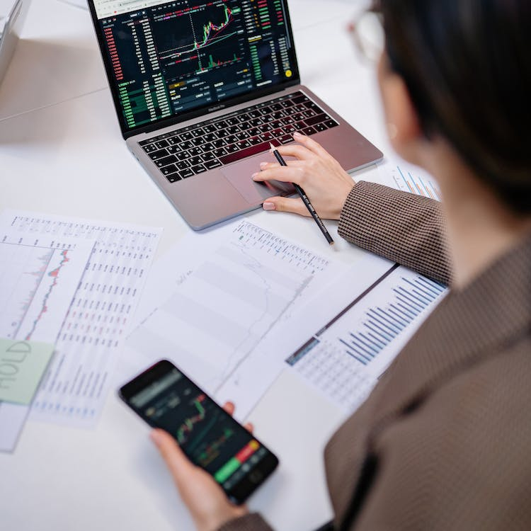
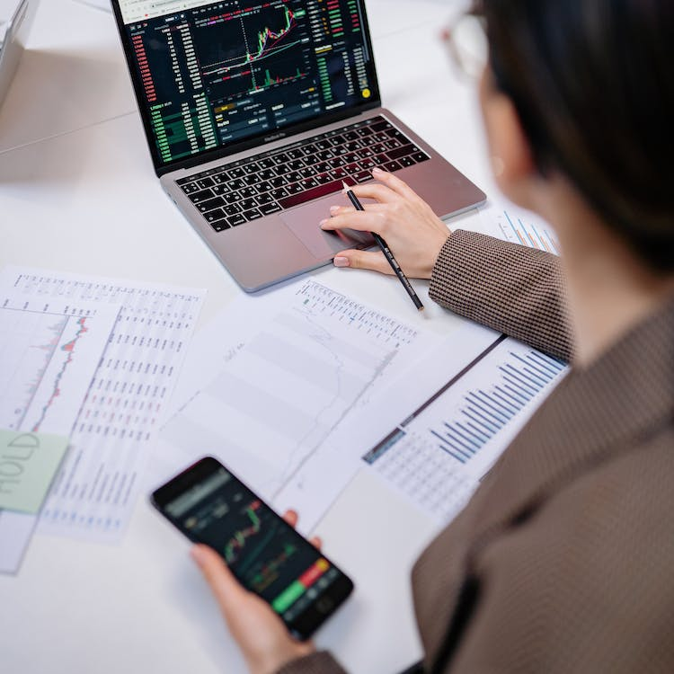
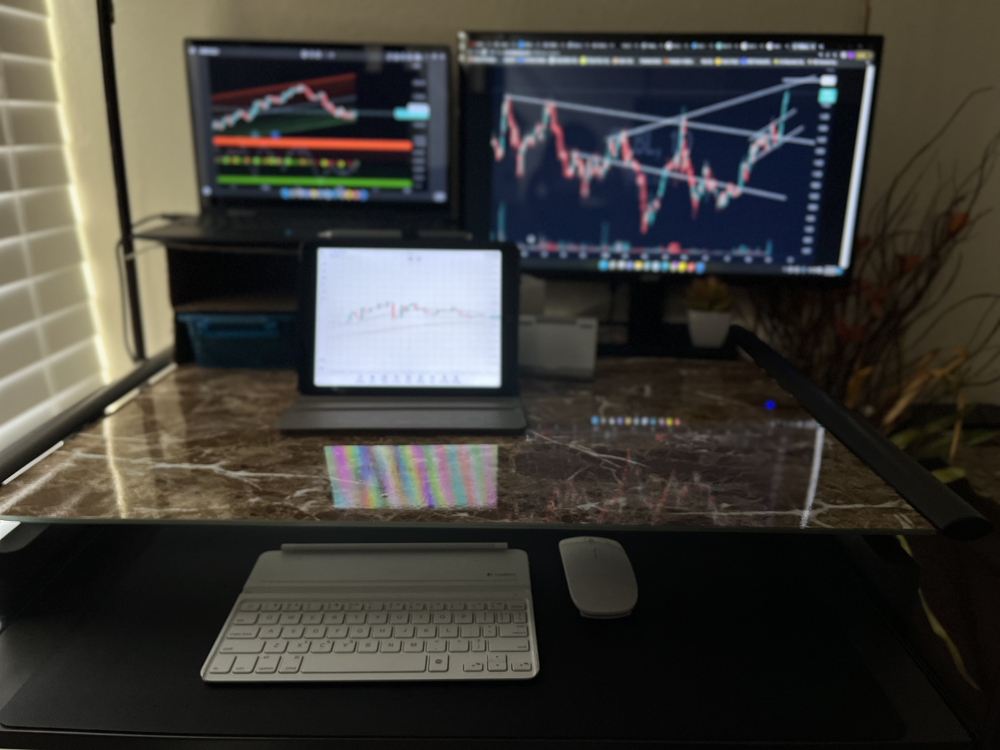
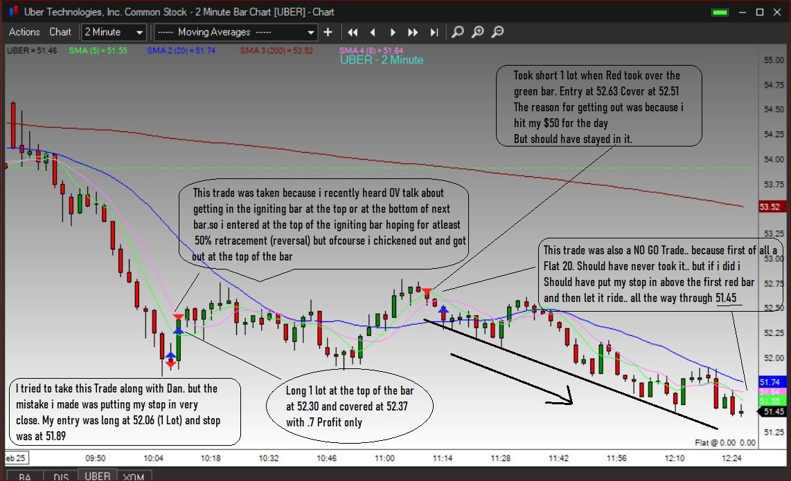

My name is Jasdeep Dhillon, I am happily married and a mother of 3. I have always had a dream of becoming a computer engineer. I love computers, i have never learned computer by going to any school but i have only just familarized myself with it by hands on experiences. I am also a Meda Student and currently learning how to become a Web Developer hence taking a step to some day maybe fulfilling my dream of becoming a Computer Engineer. As much as i enjoy working with computers, I also love to Trade Stock Market. It is my first and the best hobby that i have. Today I am going to share my hobby. My hobby is Stock Trading. I really enjoy and love to trade. The money is the first and the foremost reason why I love it. It is very addicting, it almost feels like gambling, you will win some and loose some. You can trade from anywhere as long as you have a laptop and a very good Wi-Fi connection. You have a freedom of being your own boss. You get instant results about your trades. I did not have a lot of patience but trading has taught me how to be very patience. You are learning something new everyday and utilizing it in the next day. You can make your own decision about staying in a trade for a few minutes or few hours or few days. You can also decide on how much money you want to loose or gain at a time.
 

There are a few steps to follow when someone wants to get into the stock market. First and foremost, you need to open up a brokerage account. If you want to invest you could start by setting a stock trading budget. Invest only the amount of money that you are ready to loose. Please know that you will loose money as well. A coin always have two sides(heads and tails), same as trading there is winning and loosing. You can also start paper trading, pick one stock and monitor it for at least 3 months. Many online stock brokers offer paper trading tools. Always remember to manage your risks, you always want to loose little and make money more. Always remember that you dont want to go in trading thinking "I will only win money and never loose", you will most likely loose more than you win.
 
My recommendation for someone who has never done trading in their life is to start following the market. There is an app called Yahoo Finance, you can download that and start following the market. When I started learning to trade I came across a trading firm and a gentleman named “Oliver Velez”, his firm is called “www.Ifundtraders.com”. Velez has been trading since 1981, back in those days trading was very hard to thing to do, there were no mentors, no seminars. He spent years and years to learn the tactics it cost him a lot of time, money and even his own family. But he succeeded and in 1994 he started professional teaching traders his methods. He teaches his skills to become a successful trader. He trades Live with you and teaches you as well how he takes the trades and why he took them.
Velez will teach you how to recognize the signals to take better decisions and to create your own bright future in trading. There is also a Facebook Family of traders that have full support of him, he answers any questions that you have about your personal trades. You also have the change to have a fully funded account by Oliver Velez. He makes sure that you will have all the information because If you will make money, he will make money. If you will loose money it will be his money and that is the last thing anyone would want is to fund someone and watch them loose all your money. He also funds your account, It is a great platform to start learning how to trade.I found it to be a great idea as i can learn how to trade as well as i can be funded and if i make money some percentage of my wins are mine but if i loose money i have nothing to loose. It is really worth checking it out.
Images used are from www.pexels.com Credit for these images go out to Pexels.com
Women trading stock market